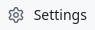
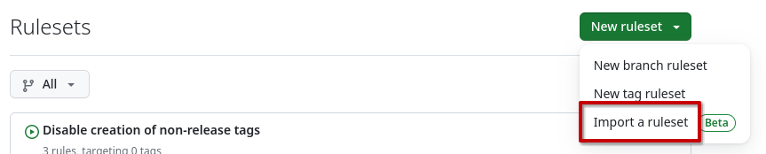

Configure GitHub¤
The generated templates make some assumptions about how the GitHub repository is configured. Here is a summary of changes you should do to the repository

to make sure everything works as expected.Issues¤
Labels¤
Review the list of labels and add:
-
part:xxxlabels that make sense to the project -
Make sure there is a
cmd:skip-release-noteslabel, and if there isn't, create one with930F79as color and the following description:It is not necessary to update release notes for this PR
-
All labels used by automation in the project, for example look for labels listed in:
.github/keylabeler.yml.github/labeler.yml.github/dependabot.yml.github/workflows/release-notes-check.yml
Discussions¤
This depends on the repo, but in general we want this:
-
Remove the Show and tell and Poll categories
-
Rename the Q&A category to Support and change the emoji to :sos:
This one is important to match the link provided in .github/ISSUE_TEMPLATE/config.yml.
Settings¤
General¤
Default branch¤
- Rename to
v0.x.x(this is required for the common CI to work properly when creating releases)
Features¤
- Wikis
- Issues
- Sponsorships
- Projects
- Preserve this repository
- Discussions
Pull Requests¤
- Allow merge commits: Default to pull request title and description
- Allow squash merging
- Allow rebase merging
- Always suggest updating pull request branches
- Allow auto-merge
- Automatically delete head branches
Archives¤
- Include Git LFS objects in archives
Pushes¤
- Limit how many branches and tags can be updated in a single push: 5
Collaborators and teams¤
- Give the team owning the repository Role: Admin
- Give everybody team Role: Triage
Rules¤
Rulesets¤

Import the following rulesets:
Note
You might need to adapt the status checks in the Protect version branches ruleset depending on your repository configuration.
- Disable creation of non-release tags
- Disable creation of other branches
- Disallow removal and force-pushes of gh-pages
- Protect released tags
- Queue PRs for the default branch
Python specific rulesets¤
API specific rulesets¤
API repositories should import this variant instead of the generic Python Protect version branches ruleset, as it also requires the gRPC migration workflow check.
Rust specific rulesets¤
Code security and analysis¤
- Enable Dependabot version updates if relevant
Code¤
The basic code configuration should be generate using repo-config.
GitHub Pages¤
No special configuration is needed for GitHub Pages, but you need to initialize
the gh-pages branch. You can read how to do this in the Initialize GitHub
Pages section.
GitHub Actions¤
GitHub App for Dependabot workflows¤
The templates include several workflows that act on Dependabot PRs:
auto-dependabot.yaml— auto-approves and enables auto-merge for routine dependency updates.repo-config-migration.yaml— runs the repo-config migration script and auto-merges only when the migration does not create commits; otherwise it requires manual approval and merge (see Automated migration workflow for details).black-migration.yaml— reformats code when Dependabot opens a majorblackupdate PR (see Black formatting migration workflow for details).grpc-migration.yaml— for API projects only, syncsgrpcioandprotobufruntime floors after matching Dependabot updates (see gRPC migration workflow for details).
These workflows use a GitHub App installation token instead of
GITHUB_TOKEN. This is intentional: actions performed with GITHUB_TOKEN do
not trigger certain follow-up workflow runs, which can prevent merge queue CI
(merge_group) from starting.
To make them work, ensure a GitHub App is installed on the
repository with at least Pull requests: write and Contents: write
permissions (add Workflows: write if migrations can touch
.github/workflows/* files).
If a migration script needs to make authenticated API calls (e.g. updating
repository settings or branch rulesets), you should also provide the
REPO_CONFIG_MIGRATION_TOKEN secret with a dedicated, least-privilege token
scoped to exactly what the script needs. The REPO_CONFIG_MIGRATION_TOKEN is
exposed to the migration script as GH_TOKEN / GITHUB_TOKEN
[!TIP] It is recommended to have this secret set only when needed, and remove it again as soon as the migration is done. This minimizes the risk of abuse in case of a security issue in the migration script.